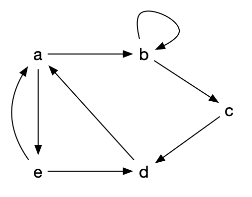

Encodage de graphes
- François Brucker
TBD ajouter structure algorithmique de graphe avec :
- structure Graphe
- structure sommet, Graphe<sommet>
- la structure ensemble {sommet}
Comment encoder la structure tableau blanc (ie. tableau noir pour les plus nostalgiques d'entres nous) de graphe en une structure informatique permettant d'utiliser les graphes dans des algorithmes.
Nous montrerons quatre encodages, chacun ayant ses avantages et ses inconvénients.
Nous utiliserons pour chacun de ces encodages le graphe orienté avec boucle ci-après comme exemple :

$G = (V, E)$ où :
- $V$ : est une liste de $n$ sommets
- $E$ : est une liste de $m$ couples de sommets.
Les différentes implémentations sont faites en python.
Opérations à implémenter
On se restreint ici à la structure de graphe orienté avec boucle, un graphe (non orienté) étant un cas particulier.
Nous ne nous intéresserons pas à la structure de multi-graphe, qui s'implémente difficilement autrement que par une liste d'arcs.
Lorsque l'on encode une structure en informatique, il faut commencer par définir les opérations que l'on veut pouvoir effectuer. On distingue usuellement des opérations en deux groupes : les opération de construction/suppression et les opérations de manipulation. Pour un graphe :
- construction de la structure :
- création de la structure
- ajout d'un sommet
- ajout d'un arc
- suppression de la structure :
- destruction de la structure
- suppression d'un sommet
- suppression d'un arc
- manipulation de la structure :
- savoir si $xy$ est un arc
- savoir si $x$ est un sommet
- parcourir tous les voisins d'un sommet
- parcourir tous les sommets
- parcourir toutes les arêtes
Il faut ensuite calculer la complexité de chaque opération, qui vont dépendre de l'encodage.
De là :
L'encodage utilisé pour exécuter un algorithme va dépendre des opérations qu'il va effectuer sur la structure.
Encodage par une liste
Structure simple, on utilise deux listes (une pour les sommets, une pour les arcs).
Construction
V = ['a', 'b', 'c', 'd', 'e']
E = [('a', 'b'), ('b', 'b'), ('b', 'c'), ('c', 'd'),
('d', 'a'), ('e', 'd'), ('a', 'e'), ('e', 'a')]- complexité de stockage : $\mathcal{O}(n + m)$
- création de la structure : $\mathcal{O}(n + m)$
- destruction de la structure : $\mathcal{O}(1)$
Pour ajouter et supprimer des arcs, il faut faire attention. En python ajouter ou supprimer un élément dans une liste dépend de l'endroit où on le fait :
python
Ajouter ou supprimer un élément dans une liste prend :
- $\mathcal{O}(1)$ opérations si c'est le dernier élément de la liste
- $\mathcal{O}(\vert L\vert)$ opérations si c'est un élément quelconque (il faut décaler les éléments après l'élément ajouté/supprimé)
On essaiera toujours d'ajouter/supprimer des éléments en fin de liste.
- ajout d'un sommet : $\mathcal{O}(1)$ car on l'ajoute en fin de liste
- ajout d'un arc : $\mathcal{O}(1)$ car on l'on ajoute en fin de liste
- suppression d'un sommet : $\mathcal{O}(n)$ dans le cas général car on ne sait pas la position du sommet à supprimer dans la liste $V$
- suppression d'un arc : $\mathcal{O}(m)$ dans le cas général car on ne sait pas la position de l'arc à supprimer dans la liste $E$
Opérations
Structure de stockage la plus simple. N'est optimisé pour aucune opération spécifique :
- manipulation de la structure :
- savoir si $xy$ est une arête :
- implémentation :
('a', 'b') in E - complexité : $\mathcal{O}(m)$ il faut parcourir toute la liste $E$
- implémentation :
- savoir si $x$ est un sommet :
- implémentation :
'a' in V - complexité : $\mathcal{O}(n)$ il faut parcourir toute la liste $V$
- implémentation :
- parcourir tous les voisins d'un sommet :
- implémentation :
[uv for uv in E if uv[1] == 'b'](rend tous les arcs de destination'b') - complexité : $\mathcal{O}(m)$ il faut parcourir toute la liste $E$
- implémentation :
- parcourir tous les sommets : $\mathcal{O}(n)$
- parcourir toutes les arêtes : $\mathcal{O}(m)$
- savoir si $xy$ est une arête :
Ce n'est pas parce qu'en python on peut écrire 'a' in V que sa complexité est $\mathcal{O}(1)$... Il faut parcourir toute la liste V pour savoir si 'a' y est.
Encodage par une liste d'adjacence
Structure plus complexe que la liste, elle nécessite un re-codage des sommets sous la forme d'entiers pour fonctionner.
Construction
V = ['a', 'b', 'c', 'd', 'e']
E = [[1, 4], [1, 2], [3], [0], [3, 0]]Dans $E$ chaque sommet est désigné par son indice dans $V$ et $E[i]$ est le voisinage sortant du sommet $i$.
Pour utiliser cette structure, on considère que les sommets sont des entiers allant de $0$ à $n-1$. La liste $V$ n'est là que pour pouvoir associer plus tard un sommet à autre chose qu'un entier (dépendant de l'application).
- complexité de stockage : $\mathcal{O}(n+m)$ ($E$ est de taille $\sum_x\delta^+(x) = m$)
- création de la structure : $\mathcal{O}(n + m)$
- destruction de la structure : $\mathcal{O}(1)$
Ajout/suppression de sommets/arcs :
- ajout d'un sommet : $\mathcal{O}(1)$ il suffit d'ajouter un entier de plus
- ajout d'un arc : $\mathcal{O}(1)$ car on l'on ajoute en fin de liste
- suppression d'un sommet : $\mathcal{O}(n + m)$ car il faut décaler tous les indices des sommets de $V$ et les répercuter dans $E$ (il faut tout re-écrire)
- suppression d'un arc :
- implémentation :
del E[4].(3)pour supprimer l'arc $(e, d)$ - complexité : $\mathcal{O}(n)$. Si on veut supprimer l'arc $(i, j)$ il faut supprimer $j$ dans $E[i]$ ce qui prend $\delta^+(i) < n$ opérations (il faut supprimer un élément quelconque d'une liste)
- implémentation :
On utilise souvent une variante de cette structure qui utilise des tableaux associatifs à la place des listes. Voir par exemple l'implémentation en python. On troque alors les complexités maximale par des complexités en moyennes, mais on a plus besoin de l'encodage des éléments sous la forme d'entiers.
Opérations
L'intérêt de cette encodage est que certaines opérations sont optimisées :
- manipulation de la structure :
- savoir si $(i, j)$ est un arc :
- implémentation :
j in E[i] - complexité $\mathcal{O}(\delta(i))$
- implémentation :
- savoir si $i$ est un sommet :
- implémentation :
0 <= i < len(V) - complexité : $\mathcal{O}(1)$ c'est un entier.
- implémentation :
- parcourir tous les voisins d'un sommet $i$ :
- implémentation :
E[i] - complexité : $\mathcal{O}(\delta(i))$. On parcourt $E[i]$.
- implémentation :
- parcourir tous les sommets : $\mathcal{O}(n)$
- parcourir toutes les arêtes :
- implémentation :
[(i, j) for j in E[i] for i in range(len(V))] - complexité : $\mathcal{O}(m)$ : on parcourt tous les $E[i]$ pour $0\leq i < n$
- implémentation :
- savoir si $(i, j)$ est un arc :
Encodage par matrice d'adjacence
Tout comme la liste d'adjacence, cette structure nécessite un re-codage des sommets sous la forme d'entiers pour fonctionner.
Construction
V = ['a', 'b', 'c', 'd', 'e']
E = [[0, 1, 0, 0, 1],
[0, 1, 1, 0, 0],
[0, 0, 0, 1, 0],
[1, 0, 0, 0, 0],
[1, 1, 0, 1, 1]]Dans $E$ chaque sommet est désigné par son indice dans $V$ et $E[i][j]$ vaut $1$ si $(i, j)$ est un arc et 0 sinon.
Pour utiliser cette structure, on considère que les sommets sont des entiers allant de $0$ à $n-1$. La liste $V$ n'est là que pour pouvoir associer plus tard un sommet à autre chose qu'un entier (dépendant de l'application).
- complexité de stockage : $\mathcal{O}(n^2)$ ($E$ est matrice carré à $n$ lignes)
- création de la structure : $\mathcal{O}(n + m)$
- destruction de la structure : $\mathcal{O}(1)$
Ajout/suppression de sommets/arcs :
- ajout d'un sommet : $\mathcal{O}(n)$. On ajoute un élément à la fin de chaque ligne de $E$ ($n$ fois $\mathcal{O}(1)$ opérations) et on ajoute une liste de $n+1$ éléments à la fin de $E$.
- ajout d'un arc : $\mathcal{O}(1)$ car on l'on écrit 1 dans une case de la matrice.
- suppression d'un sommet : $\mathcal{O}(n^2)$ car il faut décaler tous les indices des sommets de $V$ et chaque ligne de $E$ et supprimer une ligne de $E$
- suppression d'un arc : $\mathcal{O}(1)$ car on l'on écrit 0 dans une case de la matrice.
Cet encodage permet de traiter les graphes valués (la valeurs de $E[i][j]$ est la valuation de l'arête $xy$).
Opérations
L'intérêt de cette encodage est que le fait de savoir si un arête est présente dans le graphe est optimisé :
- manipulation de la structure :
- savoir si $(i, j)$ est un arc :
- implémentation :
E[i][j] == 1 - complexité : $\mathcal{O}(1)$
- implémentation :
- savoir si $i$ est un sommet :
- implémentation :
0 <= i < len(V) - complexité : $\mathcal{O}(1)$ c'est un entier.
- implémentation :
- parcourir tous les voisins d'un sommet $i$ :
- implémentation :
[j for j in range(len(V) if E[i](j] == 1] - complexité : $\mathcal{O}(n)$ On parcourt toute la ligne $E[i]$
- implémentation :
- parcourir tous les sommets : $\mathcal{O}(n)$
- parcourir toutes les arêtes :
- implémentation :
[(i, j) for i in range(len(V)) for j in range(len(V)) if E[i][j] == 1] - complexité : $\mathcal{O}(n^2)$ : on parcourt toute la matrice $E[i][j]$ pour $0\leq i, j < n$
- implémentation :
- savoir si $(i, j)$ est un arc :
Encodage par dictionnaire
C'est le codage canonique des graphes en python. Il ressemble fortement au codage par liste d'adjacence, mais ne nécessite pas de ré-encodage des sommets.
Construction
G = {
'a': {'b', 'e'},
'b': {'b', 'c'},
'c': {'d'},
'd': {'a'},
'e': {'a', 'd'},
}On utilise à la fois un dictionnaire pour stocker le voisinage de chaque éléments, lui même codé sous la forme d'un ensemble.
On remplace parfois l'ensemble de voisinage par une liste de voisinage. Cela augmente cependant la complexité de savoir si un élément est un voisin.
Opérations
L'intérêt de cette encodage est que l'on arrive à obtenir le meilleurs des deux mondes en moyenne.
- manipulation de la structure :
- savoir si $(i, j)$ est un arc :
- implémentation :
j in G[i] - complexité $\mathcal{O}(1)$ en moyenne ($\mathcal{O}(\delta(i))$ au maximum)
- implémentation :
- savoir si $i$ est un sommet :
- implémentation :
i in G - complexité : $\mathcal{O}(1)$ en moyenne ($\mathcal{O}(n)$ au maximum)
- implémentation :
- parcourir tous les voisins d'un sommet $i$ :
- implémentation :
G[i] - complexité : $\mathcal{O}(\delta(i))$. On parcourt $G[i]$.
- implémentation :
- parcourir tous les sommets : $\mathcal{O}(n)$
- parcourir toutes les arêtes :
- implémentation :
[(i, j) for j in G[i] for i in G] - complexité : $\mathcal{O}(m)$ : on parcourt tous les $E[i]$ pour $0\leq i < n$
- implémentation :
- savoir si $(i, j)$ est un arc :
Quand utiliser quoi ?
Selon ce qu'on a besoin de faire, on utilisera plutôt une structure de donnée qu'une autre, voir changera de structure si le passage d'une structure de données à l'autre est simple.
On remarque tout de suite que les trois premières structures sont mauvaise pour ajouter et/ou supprimer un sommet dans un graphe. On ne pourra donc pas les utiliser dans des applications où le graphe a un nombre variable de sommets au court du temps. Heureusement, ce genre d'application est peu courante. La dernière structure est optimale, mais seulement en moyenne. Si l'on cherche la performance garantie, ce n'est donc pas vers ce genre de structure qu'il faut s'orienter.
Utilisation de l'encodage en liste
- positif :
- structure optimale en taille.
- l'ajout de sommets et d'arêtes est optimale
- négatif :
- tout le reste
Quand utiliser cette structure ?
solution
solution
Cette structure est optimale pour le stockage, mais très mauvaise pour tout le reste. On l'utilise donc quasi-exclusivement comme moyen de stocker ou de transmettre un graphe.
Utilisation de l'encodage par liste d'adjacence
- positif :
- parcourir tous les voisins d'un sommet
- ajout d'un sommet
- négatif :
- savoir si $xy$ est une arête
- suppression d'arête
Quand utiliser cette structure ?
solution
solution
Optimale pour parcourir un graphe dont les arc sont fixés. On utilisera cette structure lorsque l'algorithme très souvent parcourir les voisinages de sommets d'un graphe fixe.
Utilisation de l'encodage par matrice d'adjacence
- positif :
- savoir si $xy$ est une arête
- ajout ou suppression d'arêtes
- Négatif :
- parcourir tous les voisins d'un sommet
- taille
Quand utiliser cette structure ?
solution
solution
Optimale pour ajouter/supprimer des arc et savoir si un arc est présent ou non. On utilisera cette structure lorsque l'algorithme très souvent modifier les arcs du graphe et/ou savoir si un arc est présent ou non.
Utilisation de l'encodage par dictionnaire
- positif :
- complexité en $\mathcal{O}(1)$ en moyenne pour toutes les opérations
- Négatif :
- complexité maximale mauvaise
Quand utiliser cette structure ?
solution
solution
Lorsque la complexité maximale la plus faible n'est pas recherchée mais que l'on veut obtenir de bonnes performances dans le cas général.
Dans la suite de ce cours on utilisera toujours cet encodage par défaut car elle est efficace globalement et facile à implémenter (elle ne nécessite pas de ré-encodage).
Bibliothèques
Il existe plusieurs bibliothèques de gestion de graphes en python. Cette page en cite trois, activement maintenues.